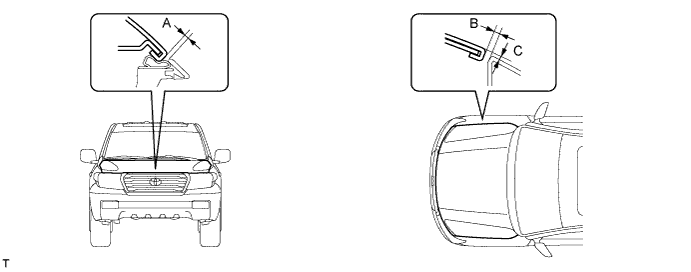

HOOD > ADJUSTMENT |

| 1. INSPECT HOOD SUB-ASSEMBLY |
Check that the clearance measurements of areas A to C are within the standard range.

| Area | Specified Condition |
| A (Reference) | 2.3 to 5.3 mm (0.0906 to 0.209 in.) |
| B | 2.0 to 5.0 mm (0.0787 to 0.197 in.) |
| C | -1.5 to 1.5 mm (-0.0591 to 0.0591 in.) |
| 2. ADJUST HOOD SUB-ASSEMBLY |
 |
Adjust the hood position.
Loosen the 4 hinge bolts of the hood.
Move the hood and adjust the clearance between the hood and front fender.
Tighten the 4 hinge bolts of the hood after the adjustment.
 |
Adjust the cushion rubber so that the height of the hood and fender are aligned.
Adjust the hood lock.
 |
Using a screwdriver, remove the hood lock nut cap as shown in the illustration.
 |
Loosen the 2 bolts and hood lock nut.
Adjust the hood lock position so that the striker can enter it smoothly.
Tighten the bolts and nut after the adjustment.
Install a new cap.